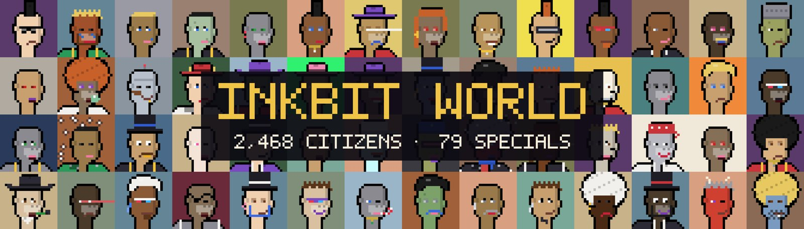
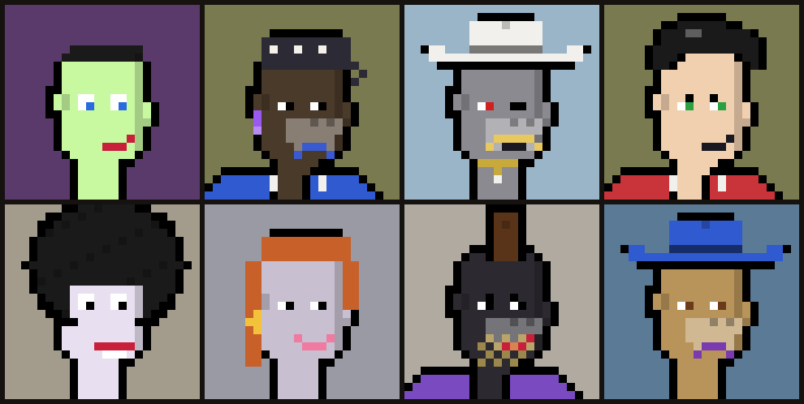

District 3 · The Capital
Inkbit World
2,468 citizens of the Capital, drawn one by one.
WHERE THEY CAME FROM
From the print shop the ink spread outward. Streets were drawn, then squares, then a castle. The Capital grew into the heart of the Kingdom, and 2,468 citizens moved in.
WHO THEY ARE
The citizens of Inkbit World are ordinary punks with extraordinary faces, built from 15 layers of hand-drawn parts. Seventy-nine of them were drawn one by one: a single Creator, then Titans, Emperors and legends.
WHAT THEY DO
They run the Kingdom from the castle. Every road on the map leads back to the Capital, including Ink Street, where the Inkbit Exchange stands.
GALLERY
Sample art · not linked to token numbers